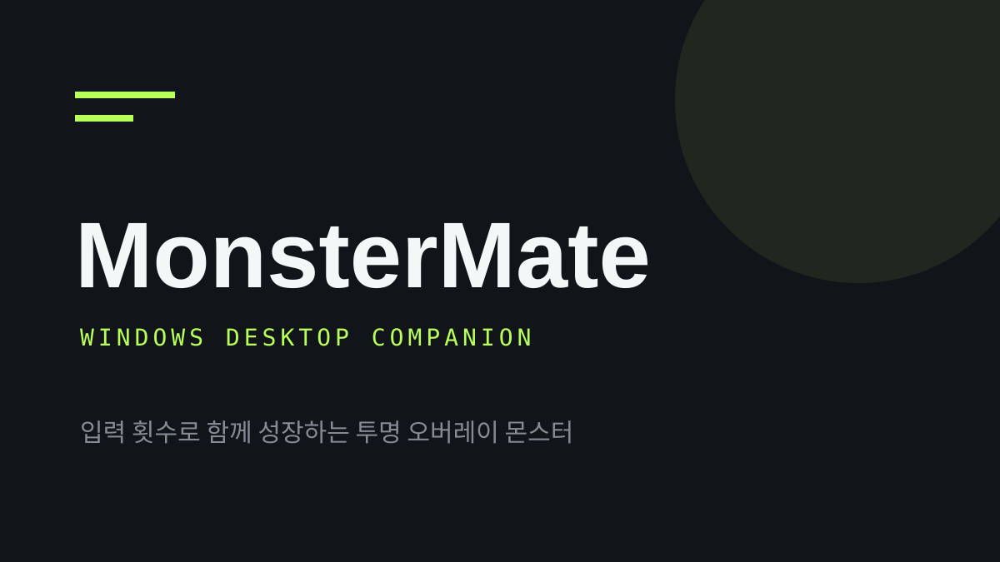

투명 오버레이
작업 화면 위에서 산책·수면·하품과 종별 반응을 보여 주는 Electron 컴패니언입니다.
LOCAL APP WINDOWS · ELECTRON
키 입력과 마우스 클릭의 내용이 아닌 횟수만으로 오리지널 몬스터를 성장시키고 꾸미는 투명 데스크톱 오버레이입니다.

새 알은 별도 성장 XP에서 시작하고, 성장 갈래를 골라 성체까지 키웁니다. 이전 친구는 컬렉션에 남고, 장착 외형은 성장 단계가 바뀌어도 유지됩니다.
작업 화면 위에서 산책·수면·하품과 종별 반응을 보여 주는 Electron 컴패니언입니다.
사용자가 직접 연 방 또는 지정한 ws 주소에서 상호작용과 공동 퀘스트를 사용합니다.
키 값, 문자열, 클릭 좌표, 활성 창 제목을 수집·저장·전송하지 않도록 설계했습니다.
생물과 효과는 외부 게임 에셋 대신 HTML/CSS 도형으로 구성됩니다.